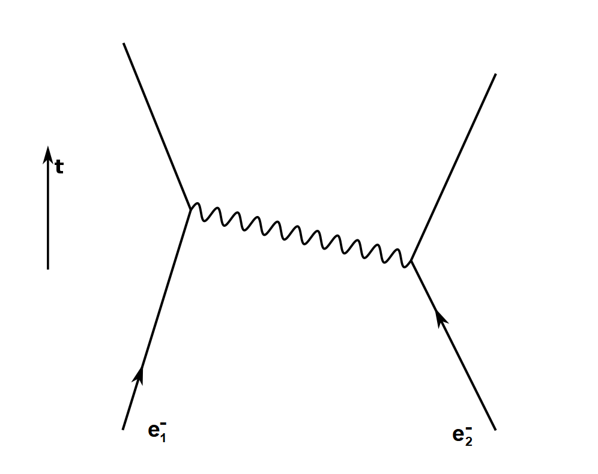
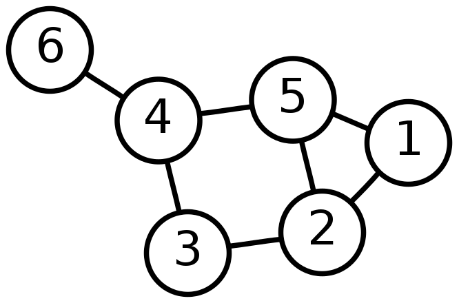
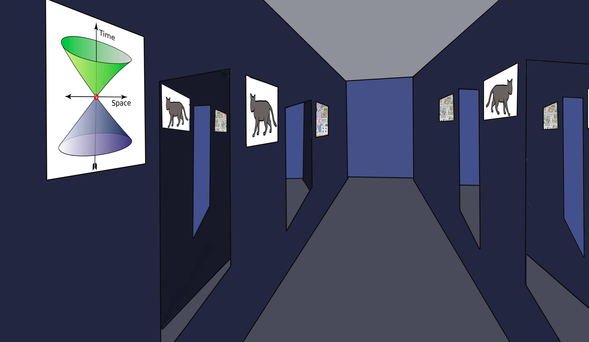
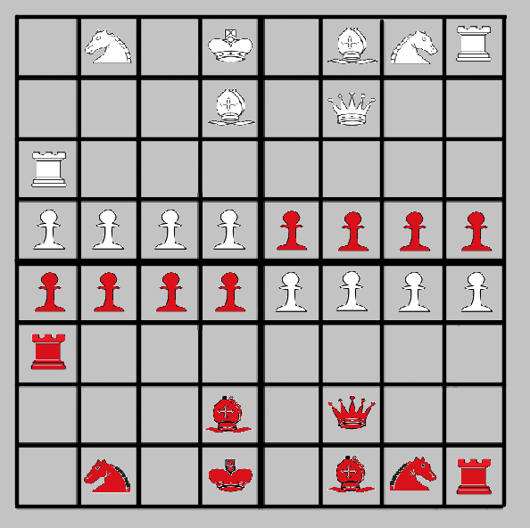
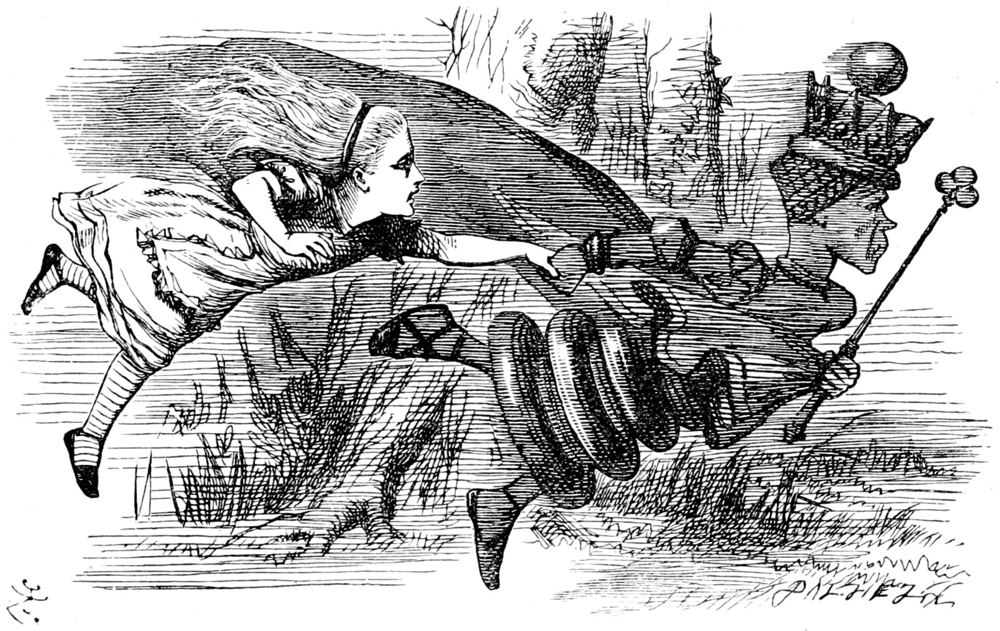

This final section of the book contains the more speculative writing I have been alluding to in previous sections. If I can be confident of anything regarding what follows, it is that I will present ideas that are just plain wrong. But history shows that even wrong ideas can be interesting and thought-provoking; sometimes they lead to some kind of progress. If there is a central theme to this section, it is that neither relativity nor quantum mechanics is complete without the other, and that their connection is much deeper than most people suspect: one seems to be the reflection of the other. In my view, relativity gives an almost-but-not-quite explanation of why things fall down, and the final piece of the puzzle is to be found in quantum mechanics; conversely, the only satisfying answer to the mystery of entanglement seems to lie in relativity's concept of the spacetime interval. And here I examine a possible answer to the questions regarding entanglement and locality that continue to generate hundreds (if not thousands) of pages of books and articles each year.
At the end of Chapter Twenty-Seven, I concluded that our notions of locality and causality needed to be re-examined in view of quantum interference and entanglement. And I have an idea to propose in that regard, one that almost makes sense in regard to photons and that may be more difficult to accept with regard to electrons. It seems too simple and obvious for everyone else to have missed it, and too interesting to have been dismissed without comment, so in that sense it's mysterious to me. Why have I never seen it mentioned anywhere else, if only to point out that the idea is wrong?
There's something about Maxwell's equations that is easy to miss unless you are looking for it. It seems as though they have been urging us to consider the world in less local terms all along. None of those equations describe conditions at a single event or point in space. They are written in terms of the curl and divergence of a vector field (in their differential forms), relating conditions among neighboring points, or in terms of that field's flux through the surface of a volume or intensity along a closed curve bounding some area (in their integral forms).
On that note, do you realize that the energy associated with an electrical circuit doesn't flow in the wires and current itself, but in the field surrounding and permeating the circuit? Veritasium did a pair of thought-provoking videos on this. We see this principle in action all the time, even though we don't often think about it. Many of our mobile phones and electric toothbrushes recharge by magnetic induction of current rather than by wired connections. It reminds me of the way that electrons and photons needn't be limited to one path or the other in a double-slit experiment.
Allan Adams began his Quantum Physics 8.04 lectures at MIT with a discussion of electron spin measurements. One surprising aspect of these measurements is as follows: A spin detector of the sort used in the Stern-Gerlach experiments (Chapter Twenty-Seven) can sort electrons into "left" and "right" spin groups. We discard the "right" group and send the "left" group into a second detector which measures them on a different axis of spin and thus separates the "left" group into subgroups of "up" and "down." What we have already learned so far is that if either of these "up" and "down" groups are fed into a third detector, the results of another "left-vs-right" measurement will be completely random, because the properties of vertical and horizontal spin cannot be meaningful for these electrons simultaneously. The surprising thing is that if we recombine the "up" and "down" groups in a way that deprives us any record of their vertical spin, and then feed them into the final horizontal detector, they will all be measured with their original "left" spin. It is as if the recombination process "erases" the not-technically-a-measurement that took place at the vertical detector. So we are left with no consistent or satisfying answer about the path taken by any of the electrons in our setup. They couldn't have taken both the "up" and "down" paths out of the vertical detector, because they are particles, aren't they? And they couldn't have taken one path or the other, because that would mean that they demonstrated a perfectly persistent horizontal spin even through the process of having been meaningfully sorted on a vertical basis.
But what about "none of the above?" Is it possible that the electrons don't really flow through the detectors per se, but like the energy of an electrical circuit, they flow through a more widely-distributed field? Are the detectors merely an influence on that field? Do the electrons really exist at definite places between the times we are measuring them?
Let's go back to the double-slit experiment (Chapter Twenty-Seven) and
consider how laser-emitted light interferes with itself to produce a
diffraction pattern on a photographic plate. Well,
we say, if light is
a particle called a photon and it falls on the plate one particle at a
time, can we tell which slit it went through?
And the answer is no.
Anything we do to measure which slit the light went through results in the
the light no longer interfering. It is as though the light must be allowed
to go undisturbed and undetected through both slits at once in order for
interference to take place. And one of the great questions that follows
this realization is: how can the light at one slit know whether the other
slit is open?
For something traveling at high speed, space and time are measured
differently. As its speed approaches the speed of light, it measures all
distances between events along its path to be zero in both space and time.
In our laboratory frame of reference, the emission of the photon at the
laser is one event and the photon's detection on the photographic plate is
another event, separated in both space and time from the first. In the
light's frame of reference, these events are one. To the light beam, both
slits might be at the same place and time as the place the beam originates
and all of the places where it might land. The photon is present at all of
these events at once.
I should mention that this view is not widely
held, at least not often discussed. There are obvious problems with
talking about a "frame of reference" that no conscious being can measure
from. John Gribbin writes in In Search of Schrödinger's Cat:
"It is not really clear what the concept of locality means for a photon."
I don't recall ever having read anyone else addressing this problem at
all.
Consider the definition of the spacetime interval, specifically the "null intervals" over which the distance between two events is exactly the same as the time between them multiplied by the speed of light: x = ct. The interval between any two events intersected by the same ray of light is zero. The meaning of that zero seems to be that light can flow between these events, and these events alone. Do these events have a strict time order? Recall that timelike intervals do and that spacelike intervals do not. "Light-like" null intervals sit on the very boundary between having or not having a strict time order, between allowing or not allowing causation.
Another potential problem with this idea of locality for all points on all possible paths for a single photon is that special relativity specifies that length contraction and time dilation occurs in the single direction of relative motion. It doesn't obviously support the idea of a particle going in multiple directions (e.g. a photon passing through two slits) and each of these directions demonstrating equal amounts of length contraction and time dilation. But to suppose otherwise seems to require rejecting the idea of equality and one of the longest-standing postulates of logical thought: if two things are like another thing, then they are like each other. If A=B and A=C, then B=C. If there is zero separation between the emission event and the passing-through-slit-one event, and there is zero separation between the emission event and the passing-through-slit-two event, can there be any separation between the events passing-through-slit-one and passing-through-slit-two?
If we stipulate that the equality holds and that the principles
of relativity apply in such a way, then the question is no longer, how
can the state of one slit affect what happens at the other,
because they
are both the same event, or at least nearly so. The question becomes
rather how is the end event (in our laboratory reference frame) for each
individual photon chosen, and what makes one event more probable than
another?
In other words, why do we get a dot at this point on
the plate rather than any of the others?
It is interesting to consider that a photon may take two paths (of differing length) through two different slits to land on the same point on the photographic plate at two different times, and thus at two different events. From our frame of reference, the light wave may be in different phases at those times and may thus destructively interfere. But from the photon's frame of reference, both of those two events are simultaneous. Perhaps there is something about the differing states of the plate itself at those events (as measured from our standpoint) that makes it more or less likely to interact with the photon.
This thought process led me to question everything I think I know about electromagnetism. Light seems to have wave characteristics only in the spaces between where it is emitted and absorbed (or reflected) and then to take effect in particle-like ways. But from one frame of reference (its own), the light does not travel at all: the emitter and absorber are (very nearly?) in physical contact. There is no between and therefore no need for an intervening field.
What I am proposing here is a broader definition of locality. "Here and now" is also "there and then" for a limited set of of values of "there and then," and with only a partial symmetry in how such events may overlap and interact, as I will clarify shortly.
I ruminated on this possibility for many years before finding any hint from a better-educated source that there might be something to it. Some of you may be familiar with the name Richard Feynman and/or Feynman diagrams. Feynman was a close associate of John Wheeler and a physics lecturer of great renown. A "Feynman diagram" shows possible interactions of particles over time and in one dimension of space.

Figure 32-1. A Feynman diagram in which two electrons repel one another by exchanging a photon. Adapted from Wikimedia Commons.
In Figure 32-1, two electrons are shown moving toward one another at the bottom of the diagram, which represents its beginning. Since both particles carry the same charge, they must repel one another. Rather than supposing that this repulsion occurs due to the electric field created by both particles, we can imagine that it is accomplished by the exchange of one or more "force-carrying" particles. In the case of electromagnetic force, the responsible particle is the photon. In How to Teach Relativity To Your Dog, Chad Orzel writes:
While it may seem strange to describe forces in terms of particles, the notion of exchange particle mediating the interactions between physical particles is one of the central ideas of modern theoretical physics, particularly the branch known as quantum electrodynamics (QED). This is most clearly described in terms of Feynman diagrams … which are nearly ubiquitous in theoretical physics.
Midway up the diagram in Figure 32-1, the electron on the right emits a photon which is absorbed by the electron on the left, and the photon shown here carries sufficient momentum to reverse the direction of both electrons. What we see in Figure 32-1 is a sudden, one-time change in the paths of both electrons. Over a longer period of time, we would expect to see many such interactions and on a larger scale, the path of each electron would look more like a smooth curve. But since energy is thought to be quantized, these interactions are fundamentally discontinuous. There is also a near-symmetry in this diagram that suggests some ambiguity in the process. Is it possible that the electron on the left emits the photon, which is absorbed a few microseconds previously by the one on the right? Regarding Feynman diagrams, Richard Halpern writes: "In such pictures, backward signals seemed just as logical as forward signals. Feynman saw no need to worry or philosophize about the lack of causality. In his view, nothing in the Einsteinian universe dictated that cause must always precede effect." Or perhaps there is no photon at all, as long as the two electrons lie on one another's light cones: "What if there were no electromagnetic fields and just a pure causal connection between the electrons?" Such a direct interaction, going in both directions of time, has been called a Wheeler-Feynman handshake. Or, as James Gleick put it when writing about Feynman's theories during this same period, what if "That's what light is: interaction between electrons[?]"
You see, the problem with fields is that their magnitude blows up to infinity at the presumed infinitesimal radius of the particles responsible for the character of the field. How do you keep an electron from interacting with the field at its own location, or acting upon itself? As a graduate student at Princeton, Feynman had the idea of eliminating the field to solve this problem; so in 1941 he and his advisor John Wheeler took the idea to Einstein for his comments. Einstein commented that this line of thinking, though somewhat paradoxical, wasn't completely foreign to him.
What is not made explicit in this discussion so far (nor in any other discussion that I know of) is that there is a frame of reference in which the electrons actually come into contact, and in which the emission and absorption events shown in Figure 32-1 are one and the same. That specific frame of reference is that of the supposed photon being exchanged, and in such a frame there is no separation in space or time across that null interval. If there is no distance between the electrons in such a reference frame, there is no need for an electromagnetic field to exchange the energy. The field and the waves in it are just what the interaction looks like from our sub-luminal standpoint.
We might ask why electron two on the right emitted the photon when it did. Was that photon "addressed" to electron one, or "to whom it may concern"? If the former, how could this be possible? If the latter, how would the energy loss associated with arbitrary emission of photons be sustainable over any period of time? Was the energy sent by electron two a wave that went out in all directions, collapsing to a particle upon absorption, or was it a particle with only a single direction all along? All of these questions are mooted in the reference frame where the emission and absorption events are identical.
For all other reference frames, we are constrained to address a separation in space, and also in time. Recognizing that this separation is relative rather than absolute, we might forgive ourselves for saying (perhaps using quotation marks to emphasize the subjectivity of it all) that one aspect of the interaction occurs "backward in time." John Cramer, a physicist at the University of Washington, proposed an interpretation of quantum mechanics in 1986 that offers a more sensible alternative to the Copenhagen interpretation and the Many-Worlds hypothesis which I hadn't planned on dignifying with any mention here (in short, the many-worlds interpretation supposes that all possible results of every quantum measurement do in fact become realized, each in their own branch of reality). Cramer's idea, called the Transactional Interpretation of QM (TIQM), elaborates on the Wheeler-Feynman handshake concept; it posits that quantum interactions are mediated by complementary sets of waves, one of which goes forward in time and the other backward. One is the familiar wave function discussed in Chapter Twenty-Seven, and the other is its complex conjugate. When these waves cross one other in opposite directions from one particle to another but in proper phase with one another, a transaction can occur such as the exchange of energy and momentum. TIQM remains a relatively obscure idea, not often mentioned in popular books.
So many mysteries of QM seem to become trivial when one considers the spacetime interval and embraces both a broader sense of locality and a more critical view of sequentiality. Find any popular text which emphasizes the apparent impossibilities of entanglement and see what remains after you cross out any language that implies that entanglement and measurement happen one after the other and in different places. If the spacetime interval is zero, then those separations are not absolute.
Having said that, now I have to admit that I have greatly oversimplified. Entanglement also occurs over timelike intervals, and can involve particles having rest mass that move at less than the speed of light. Electrons are the most obvious example of massive particles demonstrating entanglement. Do we need a "backward-in-time" interpretation such as TIQM to explain those cases? Perhaps. But I am not quite ready to concede that point until I am convinced that electrons are not a special case of electromagnetic waves. I will elaborate on that idea in this book's concluding chapter, where I will also write more about locality.
There's a word that doesn't come up often enough in discussions of relativity and quantum mechanics, and that word is topology. Topology is a branch of mathematics that no mathematician seems to be able to explain clearly; but for the rest of us, topology concerns links between elements (or "nodes") in a network. Having worked as an IT professional in the telecommunications industry, the examples that come most readily to my mind are computer networks and telephone networks. But the same idea applies to social networks. You have friendship connections with other individuals. These individuals in turn have their own connections, some to each other and some to people with whom you have no direct connection. Another related mathematical concept is graph theory, which uses different terminology but essentially comes down to connections/links between pairs of elements/nodes. In this context, a graph is a network diagram.

Figure 32-2. A simple graph of six networked elements. Source: Wikimedia Commons.
A graph may be undirected, as in Figure 32-2, with the links between nodes having no specific direction, or directed. In a directed graph, the relationship between elements may be asymmetrical, as in a social media network in which one account may "follow" another without being followed in return.
Where I am going with all of this is that the spacetime interval might be considered the topology of spacetime. It defines the connections between events. Events having a null interval between them (events which each lie in the light cone of the other) are directly connected and can be related causally, although not in an entirely symmetrical manner. We know that such events can come to agreement in a transactional way that seems to be unbiased about the relative direction of time in most frames of reference; but information seems able to flow only in one direction, being the direction of past to future in any frame of reference where the two events are not simultaneous. In this sense, spacetime would be represented by a directed graph.
Let's consider a typical entanglement scenario again with Figure 32-2 as a reference. Two entangled photons having the same polarization are emitted at event number three. Alice and Zeno measure the polarization of the photon at events two and four. As lightlike paths, the intervals from three to two and from three to four are null, or zero, as indicated by the lines between the events. The interval between events two and four is not null, but spacelike; there is no way for a light signal from two to reach four, or vice versa. Alice cannot tell Zeno the result of her measurement before Zeno must make his, and vice versa. And this is more or less the same impossibility that is crucial to the EPR "paradox" and all the thousands of pages of breathless writing about entanglement and nonlocality.
What is usually ignored in such discussions is that, having spacelike separation, events two and four have no strict time order; the standard language is that Alice's measurement at event two "immediately" determines the outcome of the measurement at a far-away event four, whatever that means. What is always ignored in such discussions is that events two and four both share an immediate connection with event three. And the reason these connections are ignored is that from any mortal frame of reference, these connections are in both directions of time, and this separation in time has apparent consequences; Alice and Zeno are both free to change the orientation of their polarizing filters "after" the photons have been emitted at event three but "before" they perform their measurements. We are reluctant to accept that their spontaneous decisions can be either anticipated by, or communicated backward in time to, event three. It is only for the photons that the events in question are simultaneous.
For at least one other writer, entanglement is intimately connected with spacetime. In "The Abdication of Spacetime," Donald D. Hoffman writes:
Brian Swingle and Mark Van Raamsdonk found that curved spacetimes obeying Einstein's general theory of relativity can emerge from tensor networks of entangled quantum bits. In this scenario, the insouciance of entanglement is feigned. Entanglement itself is somehow the fabric that holds spacetime together.
Lee Smolin says something similar, but coming at it from the other direction: "space arises from turning off connections in a network." If the interval between all pairs of events were zero, then there would be no space, no time.
Concerning the mystery of this chapter's opening paragraph, why an idea that appeals so much to me and seems so obvious should remain unmentioned in popular literature, I may have found a clue in George Musser's Spooky Action at a Distance as I have been working on this book's second draft. Of Roger Penrose's "twistor" theory, Musser writes:
He initially tried to conceive of space as a network … he built his new theory not on particles or other localized building blocks, but on light rays. Penrose wasn't interested in light per se — as a means of illumination — but in the causal links that light rays represent. Light rays stretch infinitely far across space, so they're about as nonlocal as you can get.
It seems that the theory hasn't caught on because certain details haven't been worked out. I'm very grateful for Musser's plain-English summary, because Penrose's 75-page paper introducing the subject("Twistor theory: An approach to the quantisation of fields and space-time," co-authored in 1973 with M. MacCallum) is at least as far over my head as the treatment he gives it in the penultimate chapter of The Road to Reality, which he wrote with the intent of reaching a more general audience in 2005. Musser writes that physicists inspired by the likes of Penrose and John Wheeler have been working since the 1960s to make similar approaches work, in which the network is the fundamental thing from which space emerges. Fotini Markopoulou is among those leading that effort today.
In Chapter Twenty-Five, we considered the question of why things fall down in the theory of relativity, and we almost got there without having to invoke the curvature of "time." My argument was that the curvature of space was sufficient to explain the direction of acceleration for a body already in motion relative to the earth, but not for explaining why something would drop toward the earth if released from a state of rest above it. Loath as I am to invoke time as a fourth dimension and the curvature of time as a cause of gravity, I will propose here a quantum-mechanical alternative or equivalent explanation.
For one last time, we will consider Zeno's lump of mashed potatoes from Chapter Six. Zeno holds the lump six feet above the surface of the flatbed truck on which he stands, and then lets go of it. Why does it drop? We want an answer that relies strictly on the nature of the lump and on the curvature of space in its immediate vicinity, not the relative motion of any observer nor on any "principle of maximal proper time" that presupposes when and where the lump must hit the truck bed and then offers to tell us the path it takes to get there.
I think the real explanation of why the lump falls down is that it all of its parts are in a constant state of indecision regarding where they really are or want to be. The electric forces and chemical bonds between their component molecules do tend to keep them together, though. If enough of them decide to go in a particular direction, the lump as a whole will tend to move in that direction. The same can be said of the particles making up their atoms. If the electrons decide to fall, the nucleus will follow. If we can explain the fall of the electrons, our explanation is complete.
Heisenberg tells us that the electrons don't even have a well-defined position, at least some of the time. But if they were made to pick one, the odds are slightly in favor of a downward direction. Because of the curvature of space, there are just more places to be down than there are to be up. And if we consider the electrons as de Broglie did, as waves rather than particles, then the electrons are always in oscillatory motion relative to the earth, and the curvature of space must refract them downward. I'll have a little more to say about the wave nature of matter in this book's conclusion.
Alice Lary had returned from her holiday in Italy to the council flat in Ladbroke Grove she shared with her twin cats named Albert and Niels and her roommate Priya. She flipped through the pile of letter that had come by post during her absence, pondering the fact that upon returning home, bills and junk mail seldom fail to ground a person back in the unpleasant realities of their day-to-day life. She made herself a cup of tea, ignoring a student loan statement and tossing away junk mail. A telephone call earlier that day had brought her the news that on Monday when she returned to the call center where she worked, she would be taking on a new role as supervisor (but without any increase in pay), replacing her boss who had been gradually going mad over the course of the past year and had finally consented to hospitalization. Alice sang to herself as she wound up a ball of yarn that Niels had gotten all in tangles:
"Clockwork and brickwork and balls dropped from towers
Comets and planets and meteor showers
Pendulum bobs and weights dangling from strings
Would you believe that they all are just strings?The particle zoo down to every last species
Tenures and fellowships, doctoral theses
Marionettes dancing and caged birds that sing
Theorists say that they're all made from stringI often wish
I had not quit
As an undergrad
But when I'm reminded of such useless —"
Alice stopped singing to scold the cats, who were now fighting over a ball. The ball was supposed to make rattling noises as it rolled, but had somehow lost whatever contents had made it do so. She set her tea down next to her chair and scooped both cats into her lap as she sat down.
"Why must you always quarrel so?" She asked them. "Why don't you sing me your duet like Don Henley and Stevie Nicks?" As she stood Albert on his hind legs to take the first turn at an imaginary microphone, Niels scampered away. No duets today. She set Albert back down again and sipped at her tea while stroking his fur. On the bookshelf next to her chair were a number of plays by Tom Stoppard, all of which but Arcadia, his latest, showed considerable wear from multiple readings. All five of Douglas Adams' Hitchhiker's Guide to the Galaxy novels were there, and the complete works of Shakespeare in a handsomely bound volume Alice's mother had given her. Alice reflected on how fun her vacation had been, relishing the ideas that had come to her at least as much as the memories of people and food and shops and scenery, all written together in her diary. She was looking forward to sharing them on usenet, and with that she began to wonder what kind of replies had followed her last post, a pseudonymous satire attributed to an imaginary conversation between Lewis Carroll and Albert Einstein. The usenet and BBS posts were her creative outlet and her cognitive process as she worked her way through the mysteries of modern physics. As Alice returned to her longstanding contemplation of the apparent dichotomy between relativity and quantum mechanics, she fell asleep.
Alice found herself in a long corridor. On each wall were hung a number of mirrors, spaced so that each mirror faced a counterpart on the opposite wall. None of the mirrors' corners were square, and each had the shape of a parallelogram.

Walking down the hall, Alice saw a picture on the wall showing what appeared from a distance to be a Cartesian grid. On closer inspection it was recognizable as a chessboard, but divided vaguely into quarters as if by coordinate axes. Across the center line between the opposing sides, the positions of each piece on the board were mirrored by an identical opposing piece.

In the nearest mirror, Alice saw the image of an equation: "z = x + iy." In that mirror's opposite, across the hall, she saw "z* = x - iy." Alice came next to a framed light cone diagram, and then another mirror in which she saw countless reflections of herself shrinking into the mirrored distances created with this mirror's counterpart behind her on the opposite wall. She waved to herself, and each successive reflection waved back after a barely perceptible delay due the the lag of the light crossing back and forth between mirrors, one additional instant for each successive reflection. This is a mirror into the past, Alice concluded. She wondered momentarily if she were to turn around whether she might be able see her future in the opposite mirror. But each of the paired mirrors behaved in the same way. To see into the past, I would probably require eyes in the back of my head, she thought. She thought of the White Queen in Through the Looking-Glass, who remembered things that hadn't yet happened.
Moving on, Alice found a lenticular picture of a cat in a box; depending on the viewing angle, the cat stood or lay down.
The final pair of looking-glasses were different somehow, not reflecting quite as much light as the others. Looking past them, Alice saw that the last picture on the wall was of a deck of cards scattered randomly on a flat surface. Though only some of the cards were face-up, this being a dream, Alice was able to instantly perceive that no two of the cards shared the same suit or face value. Atop the pile were the king of diamonds and the queen of hearts. Alice thought of Wonderland's Red Queen, full of rage and caprice, so different from her counterpart on the chessboard.
Coming square with the last pair of mirrors now, Alice realized that she was able to see her two cats in them, but only one of them at a time as she faced one mirror or the other. The glass was slotted somehow and only permitted direct viewing, like a traffic light that can be seen only from positions near the stop line. Or perhaps like a polarizing filter? She paused for a moment, seeing herself in the mirror as if holding one of her cats. In this position, Alice was blocking her own view and could not see the other cat's position in the reflection of the opposite mirror. She turned around to face the other mirror, and then saw herself holding her other cat. How can I know that both cats are there if I can only see one at a time? she asked herself, beginning to feel anxious. She started to retrace her steps down the hall, toward the place where she had come in.
Passing the picture of the boxed cat again, Alice came to the mirrors of future and past, but this time she saw her cats in these mirrors as well, and something was wrong. To all outward appearances, they were whole, but something told Alice that they were both in mortal peril and that between the two of them they had only one set of the vital organs required for their survival. It was up to her to decide which cat she would sacrifice for its parts and which cat would be made whole; which would belong to her future and which would belong to her past. Alice was heartbroken over her dilemma and awoke crying silently.
Through eyes blurred with sleep and tears, Alice saw the image of a stout little man. As her vision became clearer, the image resolved into the a portrait of Tweedledee and Tweedledum that hung on her wall. Seeing both cats in front of her, still at play, she collected herself and realized that the cats that she had seen in her dream as two must have actually been one and the same; It had been Albert in both of the paired mirrors of past and future, and it had been Niels in the facing pair of mirrors next to Albert's .
Alice picked up a pen and began to write.
At long last, we return to the cat whose fate was left hanging in the balance in this book's introduction. To recap, it is 11:57 AM in Princeton, New Jersey where Henry Ford is chatting about relativity with Albert Einstein. At 12:00 noon in Dearborn, Ford's cat is to die, and there isn't anything he can do about it; he can't even say goodbye, because by the time he gets to the nearest telephone it will be too late. Continuing his lesson, Einstein asks Ford regarding these circumstances, "Is there any strict sense in which your cat is not already dead?"
At this point, I will admit the pretense of Ford ever having owned such a cat, and of such a cat ever having been in any such danger. This is because although I might be able to believe that Einstein was capable of the insight (and perhaps even the malice) to construct this thought experiment as I have related it so far, I do not believe that he ever could have been party to such a scheme; but more importantly, I have no reason to believe that Einstein himself would have paid particular attention to the full implications of such a scenario, which implications I will now relate.
In partial answer to Einstein's question, there is some sense in which Ford's cat is not already dead, if we stipulate that it is 11:57 AM in Dearborn just as it is 11:57 AM in Princeton. Ford's cat can still do things that Ford will be able to have knowledge of later. It can meow and scratch at the walls of the box in which it is trapped. If it knew how, it could leave a goodbye message that Ford could read. If all is as Einstein described it, the cat can and will die, and Ford can bear personal witness to this fact at some time in the future when he and the cat are once again in the same place. Ford can hear the sad news second-hand as soon as he is able to get to a telephone.
So in that sense, the cat is still alive. On the other hand, there is still the sense in which the cat is already dead, because Ford will never see it alive again, and the cat will never hear from him again. So we might say the cat is only half dead, or in an indeterminate state of being both alive and dead, like its more famous counterpart in Schrödinger's thought experiment. But there is no strict sense in which the cat is either wholly alive or dead, because it is not entirely meaningful to ask what time it is (now) in some other place. Or perhaps more precisely, the further away some place is from here, the more obviously ambiguous the answer is to the question of what time it is there, "now." The distance between Dearborn and Princeton is somewhat trivial in relation to the speed of light, and modern advances in telecommunications greatly reduce the ambiguity of time between these two places from what it would have been in 1935; Henry Ford never owned a cellular phone, and the story of his cat as I presented it depends on that fact.
So from a modern perspective, let's look at the problem over a greater distance. Suppose Alice is in London and that Zeno is on a moon base 250,000 miles away, and the two of them are having a live video conference. Behind each of them is a clock that the other can see. If it is exactly 12:00 noon in London, Alice could suppose it is 11:59:58.72 at Zeno's moon base, because that would be the time she sees on Zeno's clock. On the other hand, Alice might conclude in consultation with Zeno that it is 12:00:01.28 on the moon, because that is the time Zeno's clock will read when he sees Alice's clock reach exactly 12:00 noon. The truth that encompasses both of those perspectives is that whatever happens either in London or on the moon base in the 1.28 seconds it takes for light to travel in-between them has nothing at all to do with "now" at either place.
As we conceive things currently, 1.28 seconds of video is said to be stored as waves in the electromagnetic field between Alice and Zeno, inaccessible by either one of them until its time has come and its journey is complete. But if we don't intercept any of that energy along the way, if we don't measure it, then it might just as rightly be said to vanish at the event where and when it is transmitted and to reappear at the event where and when it is received; and in Chapter Thirty-Two, we saw that on a moment-by-moment basis there is a frame of reference in which those two events are for all intents and purposes one and the same.
You may happen to read that the experiments which proved John Bell correct have eliminated the possibility of the "hidden variables" Einstein sought to explain entanglement in a deterministic way (Chapter Twenty-Seven). This isn't quite correct. I hope that I have made clear that what we must give up on is our primitive concept of locality. Bell's theorem grew from Bell's efforts to evaluate an interpretation of quantum mechanics offered in 1952 by David Bohm (not to confuse Bohm with Bohr or Born may be difficult, I know). Bohm supposed that electrons were particles having one and only one location, but that there was a wave associated with them that scouted out the paths ahead and determined which of them the electron would take. This was called a "pilot wave," an idea proposed by de Broglie. Bell favored the theory and wrote in 1982:
Bohm showed explicitly how parameters could indeed be introduced, into nonrelativistic wave mechanics, with the help of which the indeterministic description could be transformed into a deterministic one. More importantly, in my opinion, the subjectivity of the orthodox version, the necessary reference to the
observer, could be eliminated. … But why then had [Max] Born not told me of thispilot wave? If only to point out what was wrong with it? Why did von Neumann not consider it? More extraordinarily, why did people go on producingimpossibilityproofs, after 1952, and as recently as 1978? … Why is the pilot wave picture ignored in text books? Should it not be taught, not as the only way, but as an antidote to the prevailing complacency? To show us that vagueness, subjectivity, and indeterminism, are not forced on us by experimental facts, but by deliberate theoretical choice?
In this essay, Bell is essentially saying that "Something is rotten in the state of Denmark" and that determinism didn't die a natural death in Copenhagen, but it was in fact murdered and still comes back to haunt us like Hamlet's slain father. Der Kopenhagener Geist, indeed. He writes that even though (in the tradition of John von Neumann) there were still physicists declaring the "impossibility" of hidden variables and of determinism, Bohm's deterministic interpretation was valid in that it was nonlocal. It is local determinism that Bell rejected. In Something Deeply Hidden, Sean Carroll writes: "Bohmian mechanics is perfectly deterministic, but it is resolutely nonlocal. Separated particles can affect each other instantaneously [sic]." And furthermore:
The Bohmian world is completely quantum, not stooping to an artificial split between classical and quantum realms. … Bohmian mechanics is an explicit construction that does what many physicists thought was impossible: to construct a precise, deterministic theory that reproduces all of the predictions of textbook quantum mechanics, without requiring any mysterious incantations about the measurement process or a distinction between quantum and classical realms. The price we pay is explicit nonlocality in the dynamics.
Lee Smolin shares Bell's enthusiasm for Bohmian mechanics and his dismay regarding the dominance of other, less sensible, interpretations of QM. He calls it a "scandal" that Bohm's pilot wave theory is all but kept secret from physics students. In Time Reborn, Smolin considers the problem of hidden variables at some length and asks whether any subsystem of the physical world can be given full consideration in isolation from its larger context.
The answer to that seems to be a resounding "no." What physicists call a "hidden variables" problem, mathematicians and computer programmers might call an "initial value problem." Both QM and relativity are founded on differential equations (Chapter Fourteen) and thus require a set of initial values that can be carried either forward or backward in time. One requires a fully-specified starting point. But that's just the thing about QM: there is no such full specification. The precision of some quantities comes only at the expense of the precision of others. What is far more seldom talked about is that relativity has the same dilemma, not in the Heisenberg uncertainty principle per se, but in mutual interactions being limited by the speed of light.
I once tried to model gravitational interaction with a computer program.
On a Cartesian grid, I planned to set up two imaginary, freely falling
bodies with known initial conditions for mass, position, and velocity; and
then see how they interacted gravitationally. Having at the time no grasp
at all on general relativity, I instead chose the classical force law for
gravity given by Newton. But I wanted to at least be sophisticated
enough to use the speed of light as a limiting condition on how the bodies
interacted. Rather than implementing gravity as an instantaneous action
at a distance
causing each of the bodies to be attracted to the position
the other is, I decided that they would be attracted to the
position the other had been in. In other words, information about
each body's mass, position, and velocity would be carried to the other at
the speed of light, putting my "experiment" at least partially in
accordance with the theory of relativity.
After some consideration, I decided that the problem need not be a hard
one. To determine the immediate force on Body A, I only needed to figure
out which event in its past light cone (Chapter Seven) was occupied by
Body B. Once I had that event, I could take the spatial distance between
that and the event corresponding to Body A's immediate event, plug it into
Newton's gravitational force law, and calculate the force. To
determine the immediate force on Body B, I would do the same calculations
with regard to Body A. This algorithm was to be repeated over and over at
intervals of time to create an approximation of the paths that the bodies
would follow if they were acted on continuously. For each iteration, I
would increase the time by a value of one tick
of my imaginary clock.
Once I tried to implement this solution, however, several problems became immediately obvious. Starting only with the initial conditions (at time zero), I had no idea where Body B intersected Body A's past light cone. Since the two would already have been interacting gravitationally, putting them on curved paths, I could only extrapolate linearly backward from Body B's zero-time position and velocity, and make it an explicit condition of the test that both A and B had been released from uniform motion at time zero. For each successive calculation of the immediate force on Body A, my program would have to ask first whether Body B was close enough and whether enough time had yet passed for Body A to be affected by B's having been released from rest at time zero. If not, my program could safely assume that B had been on a linear path matching its position and velocity at time zero and then make the force calculations accordingly.
The second problem concerned how to track all of the changes in velocity that the bodies experienced after being released from rest. It wasn't enough just to track their current positions and velocities; At each iteration of my algorithm — for each tick of the clock — I had to be able to recall the position and velocity of Body B at the time it had crossed the past light cone of the event which Body A currently occupied. I wondered whether each point in my imaginary space could be made to receive information about the motions of these bodies and propagate them through the grid at the speed of light. I imagined that for each tick of the clock, I could take the information at one point and pass it to its nearest four neighbors. This however, presented its own problem: light propagates radially, spreading out in a circle, while nodes in a square grid can only interact in an inherently square fashion. I decided that my approach would be to store these positions and velocities in a database table during each iteration, starting from time zero, so that they could be recalled when needed.
The third problem was that I would be storing my data at integer values of time, yet I would almost certainly be looking for position and velocity measurements which had occurred at non-integer values of time. In other words, I could expect Body B to have intersected Body A's light cone at times in-between ticks of the clock rather than always on them. I would have to estimate using the nearest neighboring measurements.
I assumed that real physicists must have a better approach to these types of problems and I wondered what it was. Shortly later I became distracted by other activities. What I failed to appreciate at the time I was writing this program was that the problems I encountered were themselves indicative of the true nature of our world. The first problem was by far the most interesting. I had assumed that the precise positions and velocities of both masses were adequate to fully specify the initial conditions of the program. But that still wasn't enough information to run the program forward, letting the laws of physics take over. For that matter, it wasn't enough to run the program "backward" either. What was still missing was the information about the "past," which in some relativistic frames of reference was simultaneous to certain events at my time zero. The information about which precise force gravity was supposed to exert on each body was "stored" in the gravitational field, just like the 1.28 seconds of video traveling between London and the moon base, or the sound of the chiming clocks in Chapter Seven and the "Circus Canon." (Note: I recently asked an actual computational physicist how he or his colleagues might handle the calculations for such a simulation. To my great surprise, his answer was more or less that "we don't really think about that.")
My attempt at a computerized "thought experiment" is what Smolin calls doing "physics in a box." The inherent fallacy in such things is that they can only succeed in a classical physics paradigm in which initial conditions can be fully specified with arbitrary precision. Such a paradigm results in "The Expulsion of Novelty and Surprise" (the title of Smolin's fifth chapter in Time Reborn). What gives us a universe of guaranteed surprises is that the interactions between any two things in it are without beginning or end. They are, in quantum mechanical terms, inseparable. Non-locality and separability (Chapter Twenty-Seven) are the key things at issue in the EPR "paradox" and in Bell's theorem.
Let's imagine a "box" to do physics in, a bounded volume of space over a limited period of time from zero to t. A "span" of spacetime, if you will. The "initial conditions" in that span of spacetime are that everywhere in it there are force-carrying waves or particles that originated outside that boundary or "span" and have yet to accomplish their mission. There are light waves and gravity waves that carry information about things that happened prior to time zero and/or outside that bounded space. These are the "hidden variables" that make predictions impossible beyond a certain degree of precision.
Hidden variables
are exactly what Einstein found missing from quantum
theory, leaving us a world in which some processes are supposed to happen
completely at random, in a sense without cause. Quantum theory demands
indeterminacy, while relativity is seen by some (including Smolin) as
giving us a four-dimensional, pre-determined eternity.
Relativity, in
the traditional view, is supposed to codify causality by
setting a speed limit on any and all processes, while quantum theory
appears to defy causality. Smolin sees a complete absence of
indeterminacy in relativity, denouncing the Newtonian Expulsion of
Novelty and Surprise
presenting relativity as the final nail in the
coffin of free will: Given the initial conditions, Einstein's equations
determine the whole future geometry of a particular spacetime and
everything it contains, including matter and radiation,
leaving no role
for or sign of our awareness of the present.
Ironically, in the text preceding this, he
seems to demonstrate precisely the opposite, showing in a very salient
analysis that the initial conditions
of a subsystem
are necessarily at
least partly outside the subsystem being considered: We live
in a world in which the flap of a butterfly's wing can influence the
weather oceans away and months later.
Time Reborn is one of my
favorite books on physics and one of the most frustrating books I have
ever read, both precisely because Smolin gets so very close to
seeing what I see.
Anyone having a passing familiarity with quantum physics knows that there is a degree of uncertainty inherent in the measurement of position and momentum of any mass, as made evident by Werner Heisenberg (Chapter Twenty-Seven). This uncertainty is most evident on a small scale, and this small scale is the usual context in which quantum physics is considered. The nature of this uncertainty is that the more accurately we measure a particle's position, the less we can know about its momentum, and vice versa. Mathematically, we have the standard deviation of the position x, multiplied by the standard deviation of the momentum p, always being greater than or equal to a universal constant:
σxσp ≥ ħ/2
Equation 33-1. The uncertainty relation between position and momentum.
Rather than as virtual objects in a computer program, let us re-imagine bodies A and B as enormous but quantified masses widely separated in space, perhaps at a distance of ten light-seconds (by comparison the distance between the earth and sun is around eight "light-minutes"). At time zero, we measure their positions and velocities (how you would do this with such large and widely-separated objects is beyond me, but for the sake of argument let us assume that we can). Knowing their mass, we can calculate their momentum from their measured velocity. With what degree of certainty can we predict what their positions and momenta will be one second later? Those quantities will be affected by their mutual gravitational attraction during that second. With what degree of precision can we calculate that attraction? We have their positions now, but how could these bodies react to each other's present locations or actions if they are ten light-seconds apart? Mustn't they each instead be attracted to the forces that result from their counterpart's position ten seconds ago? Given that they have been interacting long before we arrived on the scene to take measurements, we can only make an educated guess as to their past positions, and thus there is an amount of uncertainty regarding the path they will follow and what the position and momentum of each will be one second from now. As we take repeated measurements, this uncertainty decreases. For every second that passes, we have that much less history of interaction to speculate about and can instead refer to our previous measurements.
A less-talked-about consequence of Heisenberg's uncertainty principle is
that measurements of energy decrease in uncertainty over time. If we
take liberties with the above uncertainty equation, we may grope toward a
sense of why this may be so: if we multiply position with momentum, we get
the same units of measure as energy multiplied by time. As Lawrence Krauss
explains, [T]he uncertainty principle tells us that the longer we measure
something, the more accurately we can determine its total energy. Since
all measurements take merely a finite time, however, there is always a
residual uncertainty in the value of the energy that can be measured in
any system.
This sounds suspiciously like our computer modeling problem; at time
zero, we have no idea what gravitational energy is hidden in the system.
It would be revealed only over time as gravity waves (or gravitons)
carrying energy in the gravitational field reach their targets. If
we had instead chosen to model an electrodynamic system consisting of two
charged particles, the problem would have been the more or less the same
as our gravitational system, with some of the information in the system
being tied up in photons rather than gravitons. In either case, the
force-carrying particles contain hidden variables.
Is it possible that
relativity and quantum theory are thus different expressions of the same
physical limits?
Cramer's Transactional Interpretation (Chapter Thirty-Two) frames quantum interactions as complex-conjugate wave functions, one going forward in time and the other backward. The standard visualization of relativity's spacetime is a pair of cones pointing in opposite directions of time, the shape of each determined by a spherical wavefront of light.
Though I can't find the phrase again by searching for it on line, I was sure that I read somewhere that Werner Heisenberg once said that physics is an honest profession, and anyone wishing to comment on it is obligated to learn it first. I'm going to be talking out of turn quite a lot in this last part of the book, lifting words and ideas from contexts I don't fully understand and putting them together in a way that may make sense only to readers whose education is as lacking as mine. However enlightening this presentation may seem, bear in mind that this is only "the way things appear from the perspective of one curious amateur" and is not the considered opinion of any single expert. John Gribbin wrote: "Quantum theory does not say what atoms are like, or what they are doing when we aren't looking at them." Since I don't really know better, I'm going to attempt to do that here for your entertainment.
In Through the Looking-Glass, Alice finds herself on a chessboard, running with the Red Queen, but somehow staying in one place.

Figure 33-1. Alice and the Red Queen race across the chessboard.
"Well, in our country," said Alice, still panting a little, "you'd generally get to somewhere else — if you run very fast for a long time, as we've been doing."
"A slow sort of country!" said the Queen. "Now, here, you see, it takes all the running you can do, to keep in the same place. If you want to get somewhere else, you must run at least twice as fast as that!"
I have been hinting throughout the book at a picture of matter that reminds me of the Red Queen's race, and I hope when I am done explaining it that it doesn't sound quite so silly. This picture is surely incomplete as well as being almost certainly wrong, but I do like it. One of the many things impressed upon my by my reading of the history of theoretical physics in the 20th century is that few ideas are too outrageous to consider.
Imagine a quantity of energy that is so compact that it fits inside its own Schwarzschild radius and is a sub-microscopic black hole, spherical in shape. The energy travels in waves inside this sphere, or perhaps as a single pulse over the sphere's surface; on a spherical surface, there needn't be more than one wave crest for there to be periodicity. The wave pulse periodically gathers at a single point on this surface, then spreads out in all directions, forming a great circle around the sphere, then meeting itself again at a point on the surface opposite the prior point. It crosses over itself through that point and then reverses direction. This is one cycle of the wave pulse. At this point in every cycle, the wave has a well-defined position at one point on the surface of the sphere, but has momentum in all directions of a plane tangent to that point. One half-cycle later, the wave has a well-defined momentum, towards the point where it will converge in another half-cycle, but its position is spread out in a great circle around this sphere. Perhaps every two cycles, it returns to the same point; perhaps after it shrinks to a point, the center of the sphere switches to the opposite side of that point from where it was previously. It may be that there is no real difference, and the question is a matter of reference frame.
Figure 33-2 (animated). A single wave crest oscillates across a spherical surface.
We might say that this wave is chasing its own tail around the surface of this sphere; its own energy draws it periodically together and its momentum carries it through the points of convergence. Once again, Figure 5-5 comes in handy to show how position and momentum take turns being well-defined, just as we used it in Chapter Fourteen in illustrating the interplay between kinetic and potential energy in a spring:
and momentum take turns being well-defined.
What I would like to be able to do here is to show that uncertainty is some kind of phasor with a constant length of ħ or ħ/2, and that σx and σp are its orthogonal components. But that's not what the uncertainty relation in Equation 33-1 is saying. σs and σp are multiplied, rather than squared and added like in a Pythagorean sum. It is tempting to try to refactor Equation 33-1 using a trigonometric product-to-sum rule like in Equations 26-1 and 26-2, which even has the necessary one-half factor seen in 33-1, but σx and σp are not themselves wave functions, though they do each describe a property of a particular wave function.
What I am grasping for here is a technical specification of a light clock, that handy conceptual device introduced in Chapter Twenty as one of our best tools for understanding relativity. Why is it that all matter behaves as a light clock? I asked. I have suggested multiple times that matter behaves as if all of its constituent parts were oscillating back and forth at the speed of light, over distances too small to see. I have held such a view for many years and only recently learned of the term Zitterbewegung, an oscillatory "jittery movement" that Erwin Schrödinger ascribed to some particles. The amplitude of this oscillation is on the scale of the Compton wavelength (the wavelength of a photon having energy equivalent to the mass of a given particle), and may occur at the speed of light in one or more directions of space. At least one physicist has proposed a link between this oscillation and the "internal clock" of an electron as described by de Broglie and Bohm. In 1982, Bohm wrote this as co-author:
De Broglie gave a particularly beautiful explanation of how the pilot wave would actually guide the particle. He proposed that inside the particle was a periodic process that was equivalent to a clock. In the rest frame, the clock would have a frequency, ω0 = m0c2/ħ. By considering how this clock would behave in other frames, he derived what is in essence the Bohr-Sommerfeld relationship which is the condition for the clock to remain in phase with the pilot wave.
I once did the exercise of figuring out how much energy a photon would need in order for its wavelength to be as small as the Schwarzschild radius of its equivalent mass. If it formed a singularity and that energy became "frozen" as mass, how much would it weigh, at minimum? What would such a particle be called? As a placeholder name, I called it an "it." I was expecting something electron-sized, but I was a long way off. I found that it's 100,000 times the mass of an electron and more like the mass of a flea's egg, so I then decided to call it a "nit" instead. Though disappointing, the exercise did produce some interesting math. The Schwarzschild radius of a "nit" is pretty near the scale of what is called a "Planck length." I played around with the equations for a while, and one interesting solution was to divide the energy between two photons of equal frequency. In this case, the Schwarzschild radius came out to two Planck lengths and the circumference associated with that radius was the Compton wavelength of the equivalent rest mass. Why is a "nit" so heavy in comparison to an electron? I have no idea, and from what I gather, something like that is recognized as a significant problem in physics.
The reason I referred the Red Queen as fitting into this picture is that a light wave moving over the Schwarzschild sphere of a "nit" has to go as fast as it can just to stay in one place. For the nit to get anywhere, one might suppose that the wave has to go faster than that, but it doesn't really. It just needs to slow its motion around the sphere, its internal clock.
I recently read that John Wheeler once speculated whether something like an atom could be held together by gravity alone rather than by what we call the "strong force" or "strong interaction." Paul Halpern recounts Richard Feynman's analysis of Wheeler's effort:
Gravity is so much weaker than electromagnetism that any structures built from it must be enormous. An atom built with gravitational rather than electromagnetic glue would be astronomical in girth. Before even thinking about quantizing gravitation, [Feynman] concluded, one must address the deeper question of why the force's weakness stands out like a sore thumb.
Wheeler's idea, like mine, didn't come out to the expected scale. Back to the drawing board, I suppose.

{kind=link}
{kind=link}